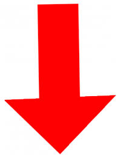

Daily Progress
Data Collected from Last 6 Month of Working Days
Project Workforce
32.21%

15% of requried work force needed
Project Velocity ™
50.21%
30% of requried velocity needed
Critical Hours
80.21%
30% of requried critical hour needed